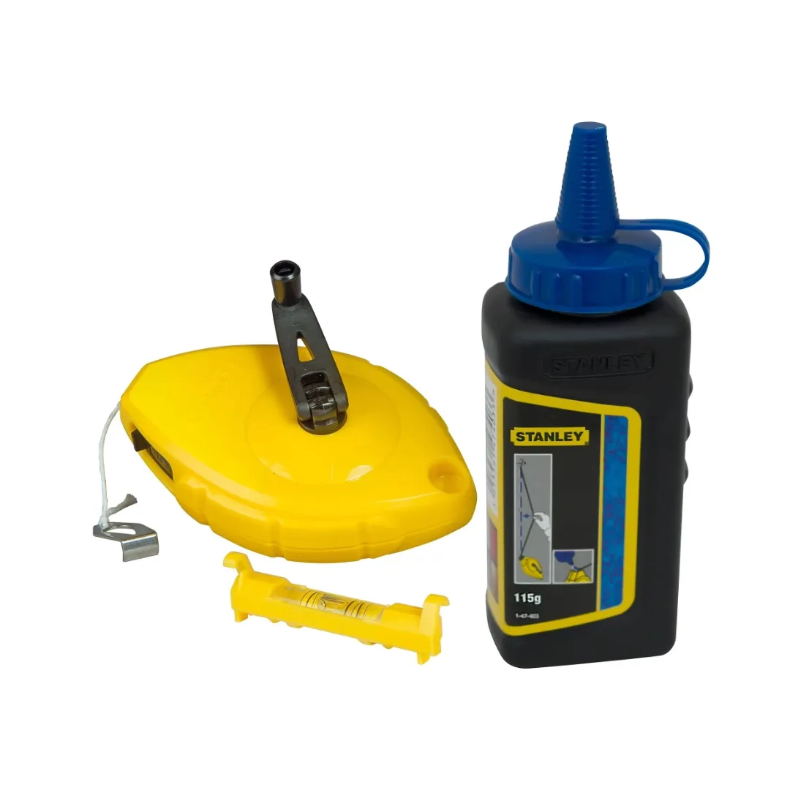
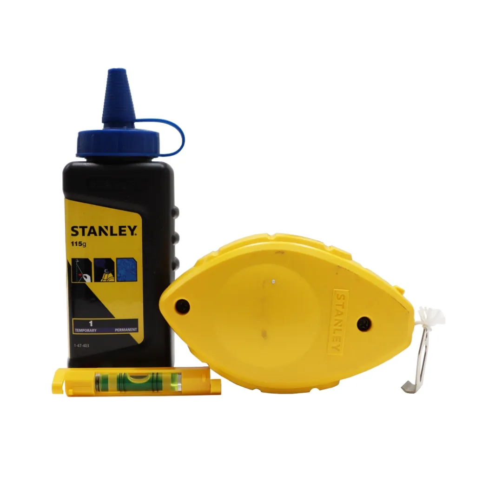
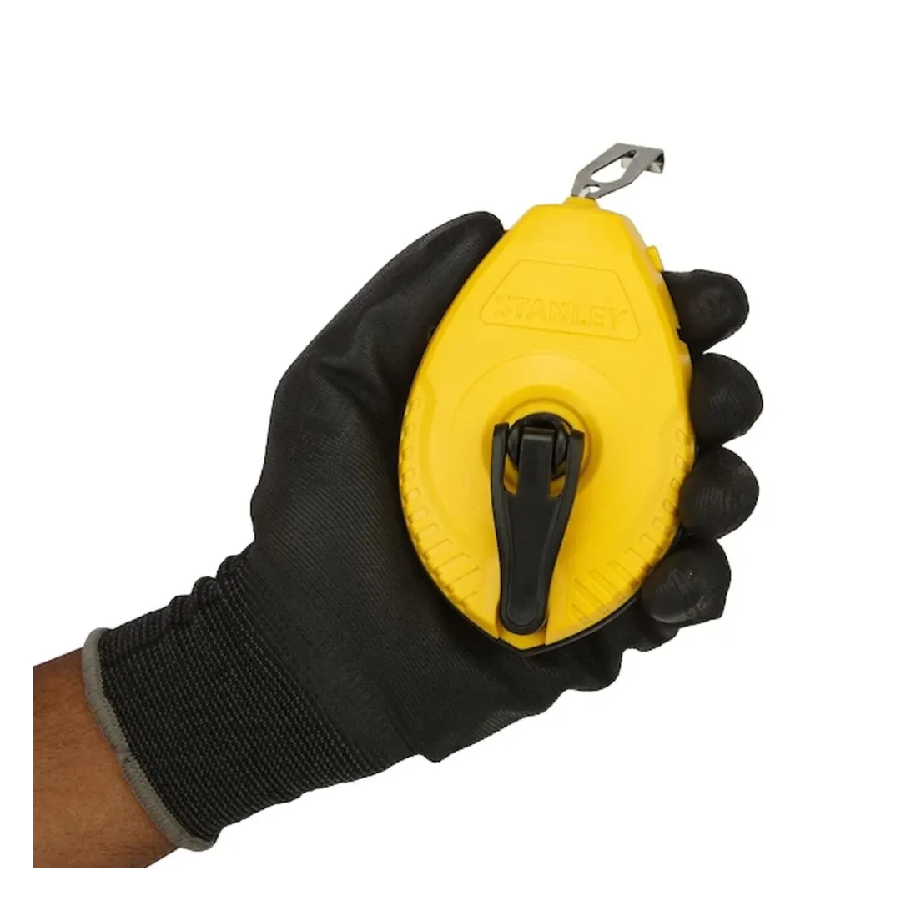

Stanley | ChalkLine Reel Set / Plastic / 30m
0-47-443



The STANLEY 30m Chalk Line Reel is a must-have for precise layout and marking jobs. Whether you're working on a construction site or tackling home improvement projects, this durable, easy-to-use tool ensures accurate straight lines every time. With a high-impact ABS case and an ergonomic design, it's built for convenience and long-lasting performance.
Key Features
- Generous Chalk Capacity : Holds 30g/1oz of chalk, providing ample supply for longer jobs. Includes 113g of blue chalk for clear, visible lines.
- Versatile Use : Can be used vertically as a plumb bob, making it perfect for both horizontal and vertical markings.
- Durable, High-Impact Case : The sturdy ABS case is designed to withstand tough conditions, ensuring long-term durability.
- Efficient String Management : The reel holds 100ft of string, and the crank folds neatly into the case for easy storage when not in use.
- On-Board Hook Storage : Features a built-in storage space for the hook, keeping it neatly stowed when not in use.
- Stainless Steel End Hook : The stainless steel hook is rust-resistant, ensuring smooth and reliable operation for years to come.
- Quick Chalk Refill : A sliding door provides easy access for quick and simple chalk refills, reducing downtime.
Why Choose the STANLEY 30m Chalk Line Reel?
Whether you're marking lines for tiling, framing, or general layout tasks, the STANLEY 30m Chalk Line Reel provides accuracy, ease of use, and durability. With its innovative design and high-quality materials, this tool is the ideal solution for professional and DIY projects alike.
Specifications
| Rating | Industrial |
| Length | 30 m |
| Material | ABS Plastic |
Includes
- 1x Chalk Line Reel
- 1x Blue Chalk
- 1x Line Level